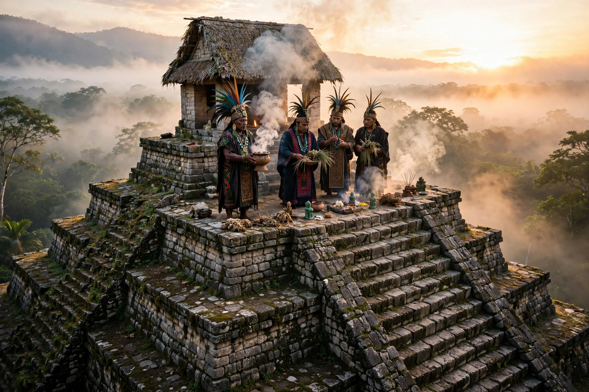

Mesoamerican religion
| Mesoamerican religion | |
|---|---|
| Region | Mesoamerica (Mexico and Central America) |
| Period | c. 1200 BC – Spanish conquest (16th–17th c. AD), with survivals to the present |
| Civilisations | Olmec, Zapotec, Maya, Teotihuacan, Toltec, Mixtec, Aztec |
| Key features | Polytheism; 260-day calendar; ballgame; blood sacrifice; world ages |

Mesoamerican religion is the shared complex of beliefs, cosmology and ritual practices developed over some three thousand years by the indigenous civilisations of Mesoamerica — from the Olmec of the second millennium BC through the Maya, Teotihuacan, the Toltecs and the Aztecs — and in syncretic forms surviving among indigenous peoples today. Despite the region's linguistic diversity, its religions display striking unity: a layered cosmos, cyclical time, a sacred calendar, the ritual ballgame, and the conviction that the gods must be nourished with offerings, above all with blood.
Cosmology
The Mesoamerican universe was typically conceived in horizontal and vertical layers: thirteen heavens above, the earth in the middle — imagined as a great disk or the back of a crocodilian monster floating on primordial waters — and nine underworld levels below, such as the Aztec Mictlan and the Maya Xibalba. A world tree or sacred mountain at the centre joined the layers, and the directions (east, north, west, south, centre) carried colours, gods and destinies. Human history ran in successive world-ages or "suns," each created and destroyed in turn: the Aztec myth of the Five Suns, in which Nanahuatzin became the present sun, is the best-known version.
Calendar and ritual
All Mesoamerican peoples used the 260-day ritual calendar (the Aztec tonalpohualli, the Maya tzolk'in) alongside a 365-day year, the two meshing in a 52-year Calendar Round solemnised by the Aztecs in the New Fire ceremony. Priests read destinies and omens in the calendar, observed Venus and the sun from temple observatories, and timed festivals at which deities were impersonated, dances performed and offerings burned. The ritual ballgame, played on I-shaped courts from at least 1650 BC, dramatised cosmic conflict and was in some cultures linked with decapitation sacrifice.
Gods and sacrifice
Pantheons varied, but certain figures recur across cultures and millennia: a rain god (Aztec Tlaloc, Maya Chaac, Zapotec Cocijo), a feathered serpent creator and wind god (Quetzalcoatl/Kukulkan), an old fire god, a maize god, and paired creator couples expressing the principle of duality (ometeotl). Reciprocity bound gods and humans: the gods had died to create the world, so humans repaid the debt (nextlahualli, "debt-payment") with offerings — incense, flowers, food, autosacrificial blood drawn from ears and tongue, and, most dramatically in Aztec practice, human sacrifice.
Conquest and survival
Spanish evangelisation destroyed temples, burned screenfold books (codices) and suppressed public cults, yet sources such as the Florentine Codex preserved the older religion in detail, and indigenous practice survived in fused forms: saints identified with rain and earth powers, Day of the Dead customs echoing the feasts of the dead, and living Maya day-keepers still counting the 260-day calendar in highland Guatemala.
See also: Maya calendar · Tlaloc · Bernardino de Sahagún